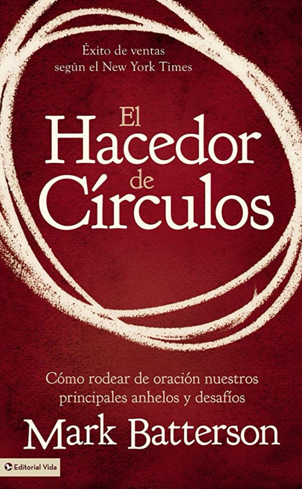

RESEÑA
En este interesante libro se nos refuerza el valor que tiene la oración en la vida de todo creyente.
Basado en la leyenda de un sabio judío del siglo primero antes de Cristo, cuya persistencia en la oración salvó al pueblo de una larga sequía y de que pereciera de hambre por ello.
Escrito por el pastor Mark Batterson, nos muestra de una manera fresca y convincente el poder como arma poderosa que tiene la oración en la vida de todo creyente, cuando se hace de manera continua y sin cesar, hasta ver realizada dicha petición.
Como primer ejemplo nos habla del milagro de Jericó. Dios le dijo al ejército israelita que rodeara en silencio la ciudad. Y les prometió que, después de haberle dado trece vueltas a lo largo de siete días, los muros sé derrumbarían. Era como si Dios les hubiera prometido algo imposible, y su plan de batalla pareciera carecer de toda lógica.
En este primer ejemplo, como en muchos otros, nos enseña que si te mantienes trazando círculos en oración alrededor de las promesas, Dios terminará por hacerlas realidad.
¿Cuantas vueltas en oración necesitan nuestros sueños, anhelos, deseos etc. para que se hagan realidad?
Te invito a que descubras en este libro, lo apasionante que pueden ser los tiempos que pasamos con Dios en oración y que transformarán nuestra vida.
¡Te lo recomiendo!
Libro Recomendado por Rosalva Guajardo de Sánchez, Líder de un Hogar de Mujeres los lunes por la tarde.